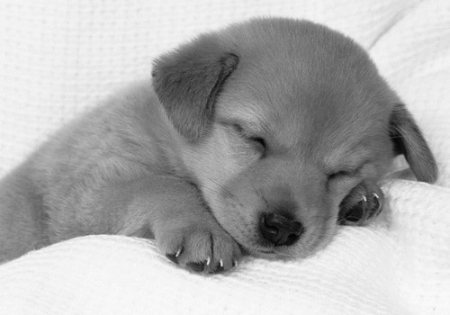
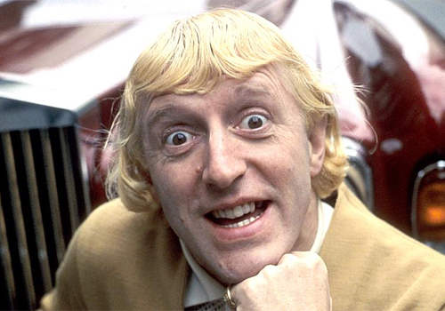

'Craig Will Fix It' is a bookmarklet to replace images of Jimmy Savile with the NSPCC hotline number. This is a very simple bookmarklet and is a work in progress, but if anyone wants to contribute than please do!
This image wont change because it is a cat. People love cats!
This image wont change because it is a dog. People love cats!
This image will change because it is Jimmy Savile. The filename contains the word Savile. Bad man!
This image will change because even though it is not a picture of Jimmy Savile, the alt text contains the word Savile.